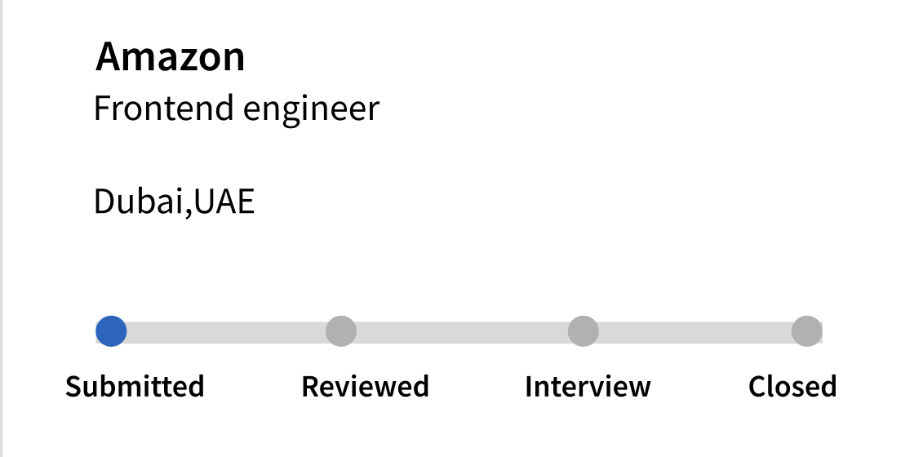
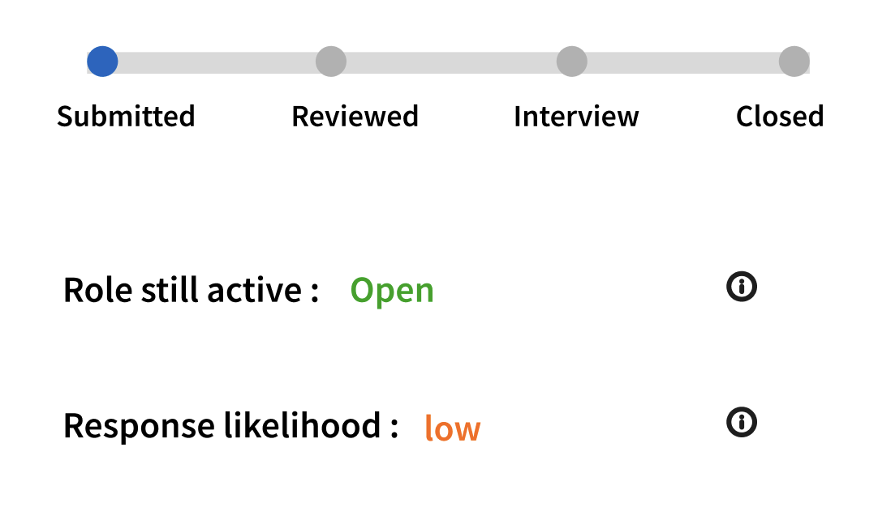
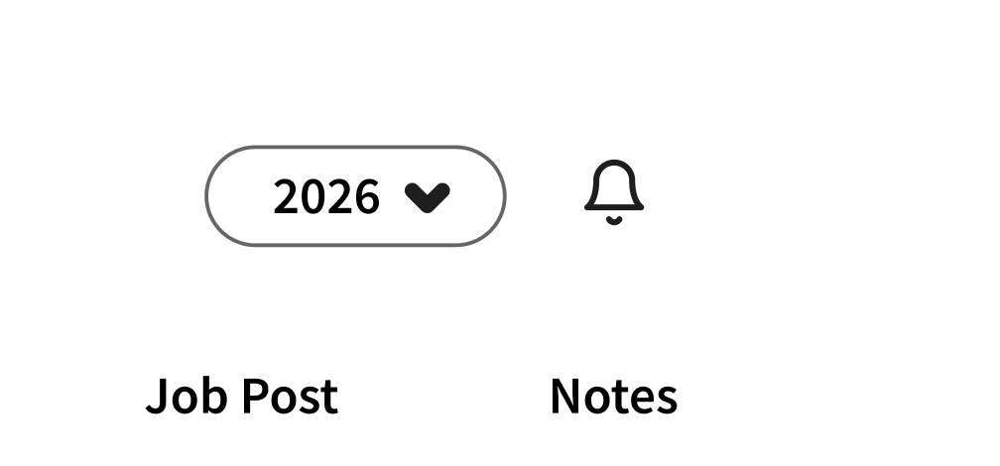
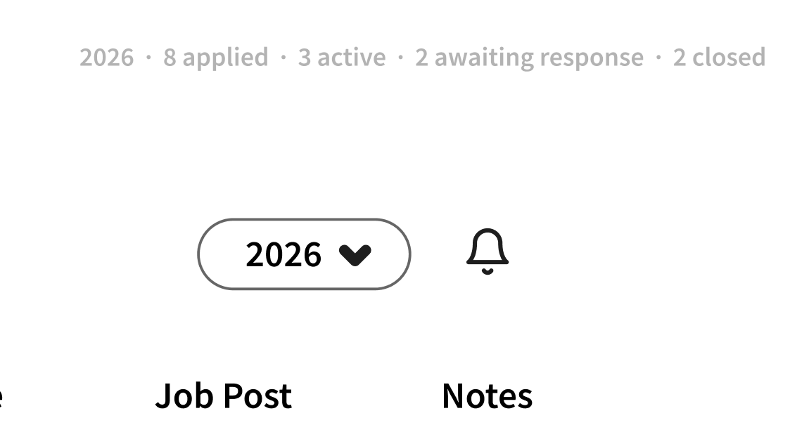
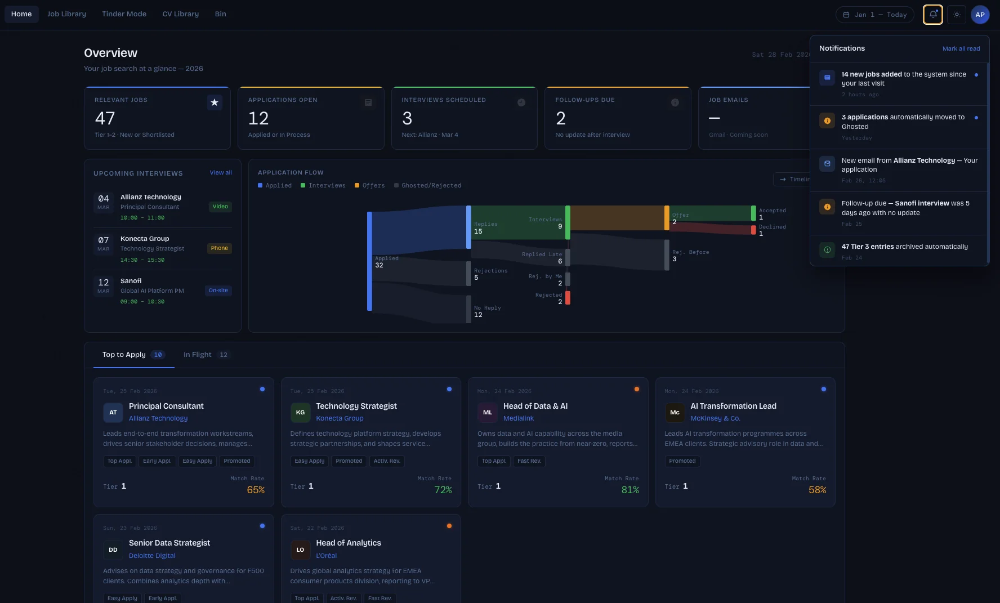

You hit Apply. Then nothing.
LinkedIn is used by over a billion people to find work. The moment you hit Apply, you go blind.
No tracking, no updates. The data exists, LinkedIn holds all of it, and it is simply never shown to the person who applied.
For someone applying to two or three roles, that silence is annoying. For someone laid off, applying to sixty roles across four months with rent due, that silence is the entire experience of unemployment.
“I've applied to 187 jobs since March. I have heard back from 4 of them. I don't know if I'm doing something wrong or if no one is reading any of it.”r/jobs, 2025
The brief
![The LinkedIn brief with every vague term marked in red and annotated. Improve, active job seekers, feel lost, no visibility, organised, transparent and motivating, and application black hole are each flagged, with arrows out to the questions they raise: what the opportunity is, who counts as an active job seeker, what users should see after submit, the business goal of reducing application anxiety, and the success criterion of moving someone from I have no idea what happened to any of my applications to I feel in control of my job search.](images/linkedin/problem_statement/old_problem_statement.svg)
Unpacking the brief
Briefs use vague language. Before designing anything, I broke every ambiguous term down until it mapped to a specific user, a specific behaviour, or a specific outcome.
| Active job seeker | 5+ live applications in the last 30 days, checking LinkedIn 3+ times a week. Not a passive browser, not a casual “open to work” profile |
| Feel lost | No memory of what was applied to, no signal on what happened after, no sense of whether effort is producing movement |
| Organised | One surface holds the entire search, with no spreadsheet and no inbox archaeology |
| Transparent | The user sees the signals the system already has about their application |
| Motivating | The interface shows progress, not just accumulation |
| Success | Measurable reduction in “lost” behaviours: reapplying to the same role, abandoning the search, churning off Premium |
From evidence to opportunity
The figures above only matter if they resolve into something buildable, so I ran each one along the same chain: what the data says, what it costs the business, what the user actually needs, and what that opens up for LinkedIn. The last column is what everything after this is built on, and the research behind the middle two is in the sections that follow.
![A four column synthesis for the laid off user group. Metrics and information: 1.1M US job cuts up 65% year over year, 27% of tech companies running repeat layoff rounds, 61% ghosted after interview, 32 to 200+ applications before an offer, 72% reporting mental health damage. Business industry problem: users default to generic tools and never switch, the market moves faster than those tools, people abandon or reapply blindly with no feedback loop, they re-enter the search with no saved context, engagement drops because tools are built for one time use, and purely functional tools ignore the emotional reality of job loss. User needs: a fast structured system from day one, something matching the pace and scale of the search, knowing what happened to every application, a tool that remembers their history, progress visibility over weeks, and feeling in control rather than overwhelmed. Opportunity: a LinkedIn native tracker for active searchers, real time application status tracking, surfacing LinkedIn's existing signals such as viewed status and role still active, persistent profile and search history across searches, a weekly progress view, and a from chaos to control framing.](images/linkedin/content/user%20group_%20Laid%20off.png)
The problem statement, rewritten
That last column is a different brief from the one I was handed. LinkedIn is not bad at finding jobs, it is bad at helping people manage a search once it starts. Job alerts, saved jobs, the Apply button: all built for the moment of discovery, nothing for the weeks that follow. So I rewrote the brief around that.
Make visible what LinkedIn already knows.
Every signal a job seeker needs already exists inside LinkedIn. It's just never surfaced to the person who applied.
The design opportunity was never to build a new data source. It was to surface an existing one.
A job search tracker built into LinkedIn, that updates itself.

Real time application status tracking
Applications move through stages on their own, driven by LinkedIn's recruiter side events. No dragging, no cards to maintain.

Surfaced application signals
A side panel exposes what was invisible: profile viewed, role still active, applicant pool position.

Persistent search history
A year filter separates search cycles, so a second or third layoff doesn't start from zero. Past searches become reference instead of loss.

From chaos to control
Applied, active, awaiting, closed. One glance instead of a scroll through fifty rows.
Everyone solved a piece. Nobody connected them.
I mapped what already exists across the four problem areas the research surfaced, looking for what none of them had solved.
| Capability | Huntr / Jobscan |
LinkedIn today |
Extensions & DIY sheets |
This solution |
|---|---|---|---|---|
| Every application logged in one place | ||||
| Status updates without the user touching it | ||||
| Recruiter side signals surfaced to the applicant | ||||
| History that survives into the next search | ||||
| The whole search readable at a glance |
Real time application status tracking
Both give job seekers a kanban board to log applications and move them through stages. The structure is genuinely useful, and thousands of people pay for it, which proves the demand.
Every status update is manual. The user drags the card. No LinkedIn connection, no recruiter side signal anywhere. You can track that you applied, not what happened after.
Surfacing LinkedIn's existing application signals
Concept explorations have imagined richer application data for candidates: viewed status, whether the role is still active, whether hiring has paused. The thinking exists. The appetite exists.
None of it exists natively today. Applicants see that they submitted and nothing else: no recruiter view, no sign of whether the role is still live or has gone dark. LinkedIn holds this data and does not surface it.

Persistent profile and search history across job searches
These tools do retain application data. Nothing is deleted, and export usually exists.
They are all built for one active search at a time. No concept of a search cycle, no separation of past from current, no way to carry a learning forward. For the many laid off professionals who face a second layoff within twelve months, that history is the most valuable data they own, and no tool treats it that way.

From chaos to control
These prove the need better than any competitor does. People build their own tools, badly and at cost to themselves, because nothing gives them one view of the whole search.
Every existing tool is functional. None are built around the emotional reality of a sustained search: the need to feel like it is going somewhere, not just accumulating. A 500 row spreadsheet is a record of effort, not evidence of progress.
What this told me
None of them connect the moment of applying to what follows. That is the space this solution is built for.
I couldn't interview 200 laid off people. So I read what 200 of them already wrote.
Method, and its honest limits
Instead of formal interviews, I read hundreds of threads across r/jobs and r/recruitinghell from 2024 to 2026, looking for patterns in how laid off professionals describe searching. A real method with a real tradeoff, so here are both sides.
Unprompted, emotionally honest accounts written by people with no idea a designer was reading. No interviewer bias, no performing, and volume I could never have scheduled.
No follow up questions, no probing a contradiction. Reddit also skews toward people having a bad time, since the majority who found a job in six weeks don't post. I triangulated every emotional pattern against quantitative sources: Greenhouse's State of Job Hunting, Axios reporting on recruiter notification rates, and The Interview Guys' 2025 job search survey.
Who I focused on
I picked the user group first. Laid off professionals were the clearest fit: people who had a job, lost it without warning, and were now searching at volume under real financial pressure.
This group is also the fastest growing segment of active job seekers in 2025, driven by a 65% year over year rise in US job cuts.
Three patterns that held
Reading across the threads, I grouped what people said by the unmet need underneath it rather than the topic they were complaining about. Three groups came back again and again, and almost everything else was a variation on one of them.
“I don't know if anything is happening.”
The signalPeople describe applying into a void. The dominant emotion isn't rejection, it's not knowing whether they've been rejected. Several described refreshing their email at 2am for a role they applied to five weeks earlier.
Representative voices“I can't hold my own search in my head.”
The signalAt volume, the search becomes a second job. People lose track of what they applied to, reapply to the same role by accident, forget which resume went where, and maintain spreadsheets that become a burden of their own.
Representative voices“I've done this before and I learned nothing from it.”
The signalThe cluster I nearly missed, and the most differentiating insight in the project. People on their second or third layoff described starting from scratch every time. Old applications gone, old contacts forgotten, no sense of what worked last time.
Representative voicesThe insights that reframed the problem
The feedback gap is structural, not accidental.
Every 100 companies hiring through Greenhouse, Q2 2024. Not a communication failure, but the intended output of infrastructure built for recruiter efficiency rather than candidate experience. Which means waiting for employers to start replying is not a strategy. The fix has to come from the platform.
Silence doesn't stop at application. It follows candidates into interviews.
Nine points worse in a year. These are not people lost in a pile. They prepared, showed up, met humans, then heard nothing. Silence isn't a top of funnel bug. It compounds at every stage.
The workaround already exists. The native solution doesn't.
People are building the product by hand, one row at a time, because LinkedIn gives them no native way to do it. The opportunity isn't to invent a habit. It's to build the one they already have.
The damage isn't from volume. It's from silence.
The cost isn't how many applications people send. It comes from uncertainty, and uncertainty is a design problem LinkedIn already has the data to solve.
The business case
When someone hits Apply, they are trusting LinkedIn to connect them with opportunity. Most of the time, the platform goes silent.
That silence has a cost. LinkedIn's job seeker revenue depends on users believing the search works. When they stop believing it, Premium Career subscribers churn, engagement drops, and the recruiter side value proposition weakens with it.
More people, applying more often, to fewer jobs. Every one of those additional applications is another opportunity for the platform to go quiet, and the volume of silence is scaling faster than the volume of hiring.
Two people, one silence.
The three clusters mapped onto two people. Same trigger, an involuntary layoff, but they experience the silence differently and need different things from the same product.
Arjun Mehta
- Land an equivalent role within four months, before runway runs out
- Know which applications are still alive, so effort goes to the right places
- Not repeat the mistakes of the last search
- No memory of his 2023 search. Spreadsheet gone, contacts lost
- Cannot tell an “in progress” application from a dead one
- Maintains a tracker that became its own chore
- Status that updates without him touching it
- Proof the effort is producing movement, not just accumulating
- A search history that survives to the next layoff
Nikita Rao
- Understand whether the silence means rejection or nothing yet
- Feel like she is doing this “correctly”, with no benchmark to go by
- Reduce the daily anxiety of checking
- Reads every silence as personal rejection
- No sense of a normal response rate, so she can't tell if she's failing
- Her tracking is her email inbox, which is not tracking
- Context and benchmarks: is this normal?
- Explicit closure when an application is dead, so she can stop waiting
- A reason to check once a day instead of ten times
Why prioritise Arjun
- A search history that survives into the next layoff
- Status that updates itself
- One source of truth
- Explicit closure on dead applications
- A reason to check once, not ten times
- Benchmarks: is this response rate normal?
Arjun became the primary. Designing for the repeat displaced user covers the first timer almost entirely, so Nikita became the check instead: if a feature made sense to Arjun but confused Nikita, it was too complex.
Fifteen ideas, four survived.
How I narrowed
Every idea got measured against three questions, and had to pass all three:
Does LinkedIn already have the data?
Does it reduce work, or add work?
Does it serve the search, or just one application?
Does LinkedIn already have this data? Anything requiring employers to change behaviour was out. 96% of companies don't notify rejected applicants, so depending on them starting to is not a solution.
Does it reduce work, or add work? Anything that required the user to maintain it was out. They already have a spreadsheet they hate.
Does it serve Arjun's search, or just this application? Features that worked on one application in isolation lost to ones that made the whole search legible.
What got cut, and why
| Idea | Why it didn't survive |
|---|---|
| Prompt employers to send rejection notices fails gate 01 |
Depends on employer behaviour change. Out on criterion 1. |
| Estimated response time countdown fails gate 01 |
LinkedIn can't know this reliably, and a wrong number manufactures false hope. |
| Application quality score harms the goal |
Judges the user at their most vulnerable moment. Actively harmful to the emotional goal. |
| Auto follow up message to recruiters spam risk |
Recruiter side spam risk. Would have been killed in review at a real company, correctly. |
| Peer comparison (“you've applied to more roles than 80% of users”) failed against Nikita |
Tested badly against Nikita. Turns anxiety into competition. |
| Notes and tags per application fails gate 02 → deferred, not cut |
Good idea, but adds maintenance work. Deferred to v2, not cut. |
Three decisions that set the structure
Before any layout existed, three questions had to be settled. Each one changed what the screen would be.
Kanban died first. Every competitor uses a board, so it was the obvious starting point, and working it through made the contradiction immediate. Kanban is a manual metaphor. If the premise is that the system updates itself, the interface can't be built on a gesture that requires the user to do the updating.
The unit changed. I started out on the application and ended up on the search. That reframe is what produced the overview bar and the year filter. Neither exists if the application stays the unit.
The signals panel had to be persistent. The signals are the entire differentiator, so putting them behind a click would bury the thing the product is for.
Getting the hierarchy right
With what settled, the remaining question was order: what the eye hits first, second, third. I worked that out in greyscale, to keep it away from colour.
Auditing the design against the person it was built for.
I didn't recruit anyone to test this. No persona testing tool, no usability session. What I did instead was walk through the finished screens myself, deliberately using Arjun's persona as the lens rather than my own judgment: what would he notice first, what would confuse him, would this actually get him what he came for.
Method
Three questions, asked screen by screen:
Two things it caught
The Company Site and Job Post icons are identical.
Both use the same link glyph. In a list of four applications that's invisible. In a list of forty, it's forty small moments of “which one is this.”
There's no search, and the list won't survive real volume.
At four rows it looks complete. Arjun has dozens of live applications at once. Past roughly fifty rows the list stops being scannable, and the tracker's entire premise, finding out what's happening with a specific application, breaks.
Revised design goals
| Original goal | Revised goal | Trigger | |
|---|---|---|---|
| Show a link to the company site and the job post | → | Make the two links visually distinct at a glance, a different icon rather than just a different position | Icon collision |
| Show every application in one list | → | Make the list usable at real volume, not demo volume. Search has to exist before row 50, not after | No search bar |
One screen, four jobs.
The whole product resolves to one surface. Adding a destination to LinkedIn's navigation would cost the user a habit they don't have, so the tracker lives where the applications already are.
Real time application status tracking
Huntr and Jobscan make every status update manual, so the status is always a step behind reality. Reality sits on the recruiter's side of a wall the user can't see through.
The tracker lives inside LinkedIn, where the data is. A recruiter opens an application, the status moves. A posting closes, the application is marked closed. The user does nothing.
No drag interaction anywhere. The moment the user can move a card, the interface is telling them that maintaining it is their job. It isn't.
Surface LinkedIn's existing application signals
Applicants see that they submitted. They cannot see whether a recruiter opened their profile, whether the role is still being filled, or where they sit in the applicant pool.
A persistent right hand panel surfaces those signals, pulled from data LinkedIn already holds. The mockup shows exactly what it reports.
Signals are stated as fact, never as prediction. “Viewed by recruiter, 2 days ago”, not “high likelihood of response.” Inventing optimism for someone under financial stress is a betrayal, not a feature. The panel reports. It does not reassure.
The recruiter workflow stays unchanged. Nothing here asks a recruiter to do anything new, which is why it's shippable.
Persistent profile and search history
Every existing tracker is built for one search at a time. On a second or third displacement, the user starts from zero: history gone, patterns gone, contacts gone.
A year filter separates search cycles. Past searches stay accessible as reference, the current search stays uncluttered.
Past searches are filtered out by default, not deleted. Arjun needs 2023 available, not in his face while he's getting through this week. One click to the past.
Repeat layoffs within twelve months show up again and again in the community research. Not an edge case, the primary persona's actual life.
From chaos to control
A sustained search isn't fixed by a better spreadsheet. 500 rows is a monument to effort with no evidence of progress.
An overview bar reading 8 applied · 3 active · 2 awaiting response · 2 closed turns a pile of applications into a picture of a search in progress.
Closed applications are counted, not hidden. The instinct is to hide the losses, but an uncounted rejection is one the user is still unconsciously waiting on. Naming it closed is what lets them stop. Closure is the feature.
This started as a chart, which looked more impressive and communicated less. Four numbers read in under a second beat a visualisation that needs interpreting. In a product built to reduce cognitive load, the more impressive option was the wrong one.
How I'd know if this worked.
No shipped numbers, since this is a concept. What I have is a definition of what I'd measure and why, because a design goal that can't be measured is a preference.
Not “time in tracker” or “sessions per week”, both of which go up when a product is anxiety inducing. This one only moves if the signals exist, are found, and are worth returning for, which is the value proposition.
Supporting metrics, mapped to design goals
| Design goal | Metric | Target | Why this one |
|---|---|---|---|
| Reduce post application uncertainty | % of live applications with a status other than “Submitted” after 14 days | > 60% | Directly measures whether silence was actually broken |
| Eliminate manual tracking work | % of tracked applications requiring zero manual user input | > 90% | If users are still editing rows, the automation failed |
| Give closure on dead applications | Median days between a role closing and the user seeing it marked closed | < 3 days | Uncertainty is the harm, and speed of closure is the cure |
| Make the search feel like progress | Self reported “I feel in control of my job search” (5 point, in product survey at week 4) | +2 pts | The brief's success statement, measured directly |
| Continuity across searches | % of returning users (2nd+ search) who open the year filter within their first 3 sessions | > 40% | Validates the most differentiated and riskiest feature |
| Business outcome | Premium Career 6 month retention, tracker users vs. control | +8% | Ties the emotional outcome to revenue |
Counter metrics: how I'd know it backfired
Any product that surfaces status can make anxiety worse. Three things I'd treat as failure, whatever the North Star did:
How I'd validate before shipping
Usability study. 5 to 8 laid off professionals in active search, moderated, on two questions: does the status panel reduce anxiety, and does the year filter make past searches feel useful rather than painful.
Diary study. 2 weeks, 6 participants, to catch the thing usability testing can't: whether the tracker becomes a habit or a new source of dread.
Instrumented beta. A small cohort with the counter metrics wired up from day one, not retrofitted after launch.
What I can claim, and what I can't.
This concept hasn't shipped, so there is no engagement data, no retention curve, no A/B test. Claiming otherwise would be inventing evidence. Here's what the work produced.
What was validated
What is not validated
The outcome
Four feature sets from research to high fidelity, a decision record for each, a measurement framework with counter metrics, and two interface fixes caught before they shipped.
Proof that it works. That requires shipping it.
What I'd take into the next one.
Scope is a design decision, not a constraint on one.
This started as a broad LinkedIn redesign and became a tracker for laid off professionals in repeat displacement. Every time I narrowed the user group the decisions got easier, not because there was less to do but because there was finally something to decide against. A tool for everyone is a tool with no opinions.
Research without access is still research, if you're honest about the trade.
Instead of interviews I had hundreds of unprompted Reddit accounts, quantitative data from Greenhouse and The Interview Guys, and a pattern that held across both. Community research isn't a shortcut version of interviews. It's a different method with a different bias profile, honest as long as you say which one you used and what it couldn't tell you. Next time, even three real conversations would let me probe the contradictions I could only observe.
The emotional layer is a feature, not a nice to have.
Every competitor solved the functional problem and ignored the emotional one. The overview bar is the difference between a search that feels like a void and one that feels like it's going somewhere. Deciding to count closed applications rather than hide them was where that clicked: closure isn't a negative state to minimise, it's what lets someone stop waiting.
I cannot see my own interface.
Both friction points were invisible to me after weeks on the same screen. Identical icons I'd stopped seeing as identical. A list that worked beautifully at the four rows I'd populated it with. They only surfaced when I stopped reading the screens as their designer and read them as Arjun, which is a cheap thing to do and I had not once done it. That second one is the real lesson, and now I populate every design with the density the user actually lives at, from the first frame.
Constraints are the argument.
The strongest thing here isn't a feature. It's that nothing requires a recruiter to change their behaviour or an employer to start replying. That constraint killed half my ideas and made the surviving half shippable. 96% of companies don't notify rejected candidates. A design that waits for that to change isn't a design. It's a wish.
What I'd do next
Four feature sets at high fidelity is a concept, not a product. The next step is the one I couldn't take from outside: a moderated study with 5 to 8 laid off professionals in active search, on the two questions I can't answer myself. Does the status panel reduce anxiety, and does the year filter make a past search feel useful rather than painful?
The second is the one I'm least sure about. Showing someone the record of a search that ended in a layoff could be a resource or a wound. I designed it as a resource. I'd want to find out.
Sources for the statistics
| 4 in 100 companies notify every rejected applicant, so 96% say nothing | Axios / Greenhouse, September 2024. Companies hiring through Greenhouse in Q2 2024. |
| 61% ghosted after an interview, up from 52% a year earlier | Greenhouse, State of Job Hunting, 2024. |
| 72% say the search damaged their mental health, 66% of those blame the silence rather than the volume | The Interview Guys, State of Job Search 2025. |
| Spreadsheets running past 500 rows, and the language people use about them | Community observation, r/jobs and r/recruitinghell, 2025 and 2026. |
| 1.1M+ US job cuts, Jan to Nov 2025, and the 65% year over year rise in cuts | Challenger, Gray & Christmas, reported Dec 2025 |
| 32 to 200+ applications before a single offer | The Interview Guys, How Many Applications It Takes to Get Hired, 2025 |
| 70% repeat layoffs within 12 months of the first | Community observation, r/jobs and r/recruitinghell, 2025 and 2026 |
| 27% of tech companies ran 2+ layoff rounds, 2023 to 2025 | Zety, Repeat Layoff Index, 2023 to 2025 (based on Layoffs.fyi data) |